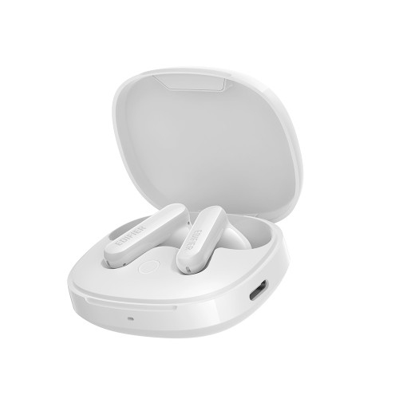
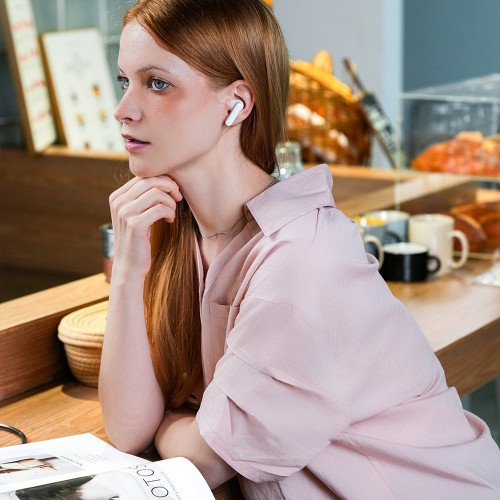

이 포스팅은 네이버 쇼핑 커넥트 활동의 일환으로, 판매 발생 시 수수료를 제공받습니다.
에디파이어 X2 Pro 화이트, 여행 가방에 챙길 무선 이어폰
밝은 색 액세서리를 좋아한다면 이어폰도 화이트가 먼저 눈에 들어오죠. 이동 시간에 쓸 작은 기기 하나를 고를 때 디자인과 예산이 함께 맞으면 선택하기 편해요.
EDIFIER X2 Pro 화이트는 10월 6일 표시 가격 39,000원으로 확인했어요. 오늘은 화이트 색상을 중심으로 살펴볼게요.
💚 X2 Pro 화이트 디자인·현재 가격 보기(웃는 스티커)
1. 화이트 색감

판매자 제공 상품사진 · 구성 및 옵션 예시 · 클릭하면 원본 사진화이트 케이스와 이어버드가 밝고 단정한 분위기예요. 평소 쓰는 휴대폰 액세서리나 파우치와 색을 맞추고 싶은 분에게 관심이 갈 디자인이죠.
판매 사진에서 닫힌 케이스와 이어버드의 형태를 함께 볼 수 있어요. 작은 여행 소지품을 고르듯, 매일 꺼내 쓸 모습을 떠올려보세요.
(자주 쓰는 물건은 좋아하는 색으로 고르는 재미도 있으니까요.)
2. 기다리는 시간
판매자 제공 상품사진 · 구성 및 옵션 예시 · 클릭하면 원본 사진기차 출발을 기다리거나 카페에서 잠시 쉬는 시간에도 무선 이어폰을 챙기면 음악을 곁들일 수 있죠. X2 Pro는 무선 블루투스와 액티브 노이즈 캔슬링을 공식 판매 상세에서 소개해요.
이어버드 모양과 조작 방식, 사용 시간 안내까지 함께 보면 내가 쓸 장면과 맞는지 판단하기 쉬워요. 아래에서 이 모델의 기능을 차례로 살펴보세요.
💚 화이트 모델 기능·배터리 안내 살펴보기3. 색상으로 마무리

판매자 제공 상품사진 · 구성 및 옵션 예시 · 클릭하면 원본 사진블랙과 고민하고 있다면 기능을 살핀 뒤 평소 좋아하는 액세서리 색으로 선택을 마무리해도 좋아요. 오늘 링크는 화이트 상품으로 연결돼요.
3만원대 무선 이어폰을 찾으면서 밝은 디자인까지 챙기고 싶었다면 아래에서 현재 구성과 혜택을 열어보세요. 다음 이동 시간에 함께할 작은 여행템으로 살펴보기 좋아요.
💚 에디파이어 X2 Pro 화이트 현재 혜택 보기#에디파이어X2Pro #X2Pro화이트 #화이트이어폰 #여행용이어폰